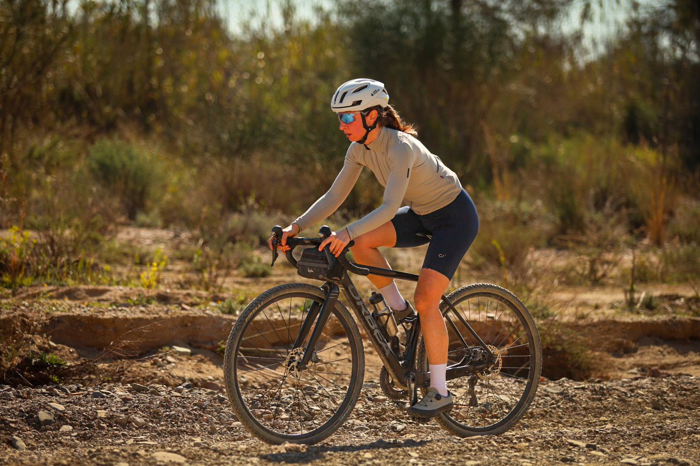

Maspujols, a small town in Tarragona's Baix Camp county, hosted Massos Gravel on February 22 — the second stop on the Sport1ion Gravel Circuit, following November's Priorat Gravel, which drew more than 100 riders. Billed as a non-competitive march rather than a race, the event opened its gravel, mountain bike and e-bike categories to riders of every level, with no clock deciding who "won."
The route covered 60km and roughly 700m of accumulated climbing through the countryside around Maspujols, with a mid-route aid station keeping riders fed before a fuller spread waited at the finish. Registration was capped at 200 riders at an early-bird price of €25, and the field filled through the Sport1ion and RockTheSport platforms in the weeks before the event.
Massos Gravel rode in solidarity with ACCU Catalunya, the regional association supporting people with Crohn's disease and ulcerative colitis, folding a charity component into the circuit's second stage. Every finisher — not just the fastest — took home a medal at the line, keeping the focus on participation over placing.

Organizers built the day around families as much as athletes: children's workshops ran alongside the ride, and finishers had access to the local pavilion's showers and bathrooms once they were off the bike. It's a format Sport1ion has now repeated twice in five months, with the circuit's next stop still to be confirmed.
Image Media's team on the ground — Eduardo Castro, Jose Ramon Moreno and Cassian Nicorescu — covered the ride from the Maspujols start line through to the finish-line pavilion.